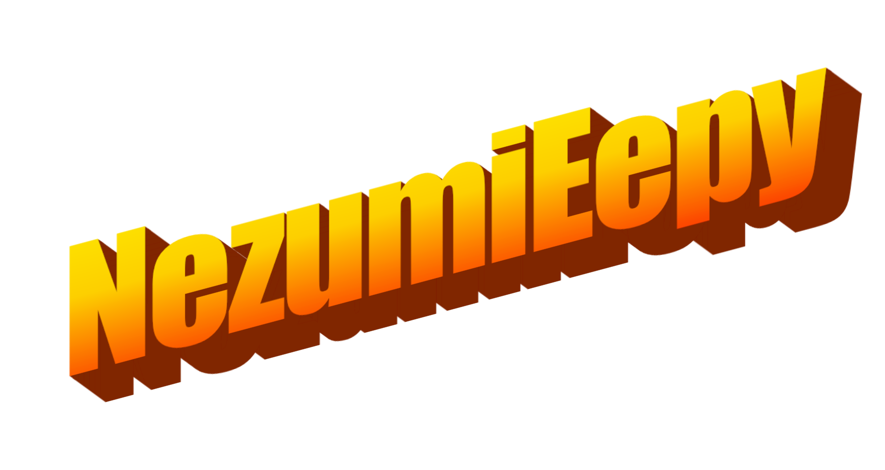

Hiihhihi, im Nezumieepy a lil artist thats has the same height as a rat, has the same size as a rat, has the same weight as a rat, and has the same looks as a rat. a Rat.
I also recently have been doing coding for fun and have been considering it as my second hobby, since early childhood i really liked computers, and i think its really fitting for me to like it, its filled with puzzles that you have to solve and it always entertains me, somehow, i love it :DDD
THIS WEBSITE IS STILL A WIP AND IT WILL BE CONSTANTLY BE UPDATED
This website was made with: Neocities.